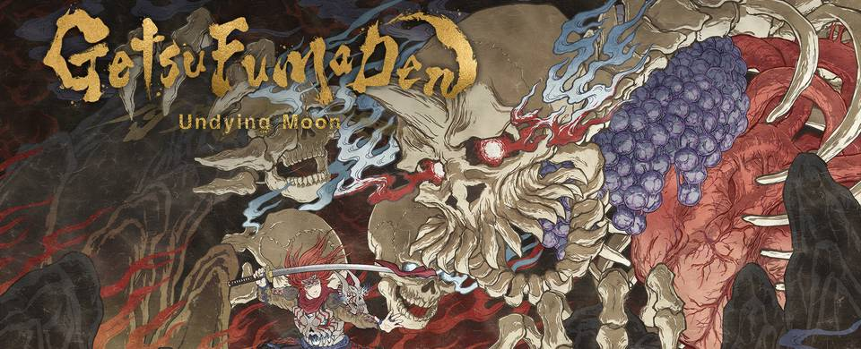

วิธีเล่นเกม GetsuFumaDen Undying Moon สำหรับมือใหม่

ผู้เขียนเขียนบทความนี้เพราะน้องชายซื้อเกมนี้ให้ ตอนแรกบอกเลยว่างงในระบบมาก อาจจะเพราะแก่แล้วไม่ค่อยเข้าใจระบบเกมใหม่ ๆ พอจับต้นชนปลาย นั่งอ่าน Tutorial แล้วเล่นเองจนเข้าใจ เลยเอามาเขียนสรุปไว้ดีกว่า เพราะอ่านในเกมค่อนข้างงง 😅
เกมนี้เป็นเกมแนว roguelike action ฉากเกมเป็น 3D แต่เวลาเล่นเป็นแนว 2D Platform เดินซ้ายขวา กระโดดบนฉาก ฟันศัตรู บางฉากมีตกเหว ตกทะเล ซึ่งจะเสียพลังชีวิตเพื่อกลับขึ้นมาบนฝั่ง ต้นฉบับมาจากเกมโบราณชื่อ Getsu Fūma Den หรือเกมดาบสายลมสมัยเครื่อง Famicom/NES ปี 1987 เอาโครงเรื่องมาพัฒนาต่อใหม่ ตัวละครหลักจะชื่อ Getsu Fuma เป็นหัวหน้าเผ่าลำดับที่ 27 โดยเน้นออกแบบมาให้เล่นซ้ำ คือทุกครั้งที่เข้าไปเล่น ฉากจะถูกสร้างแบบสุ่มขึ้นมาใหม่ทุกครั้ง อาวุธก็สุ่ม ศัตรูก็สุ่ม เรียกว่าไม่สามารถจำฉากเก่าแล้วหาทางลัดไปเจอ Boss เร็ว ๆ ได้
ระบบการเก็บของในเกม
ทุกครั้งที่เข้าไปเล่นเกม ของที่เก็บสามารถนำกลับมาที่ที่ทำการเผ่า (Clan) หรือฐานทัพ โดยการฆ่า Boss แล้วเดินไปจนสุดทางจนถึงรูปปั้น ผู้เล่นสามารถยอมแพ้และเดินทางกลับมาที่ทำการเผ่าได้ โดยของที่เก็บกลับมาจะได้มา 100%
หากเล่นแล้วตายระหว่างด่าน คุณจะกลับมาได้เฉพาะวิญญาณเท่านั้น ส่วนของจะได้มาแค่บางส่วน ซึ่งจำนวนที่นำกลับมาได้มากน้อยขึ้นอยู่กับที่คุณ upgrade ความสามารถใน Secret Arts > Material Recover และ Spirit Mineral Recovery
ของที่เก็บได้ในเกมจะนำมาปลดล็อคอาวุธ สร้างอาวุธใหม่ และปลดล็อคสกิล
เพิ่มจำนวน Potion สูงสุดที่ติดตัวได้ในเกมตรงไหน
หาก Potion ที่เราสามารถแบกไปกับตัวได้น้อยเกินไป ไม่พอเพิ่มเลือด สามารถเพิ่มได้ที่ Secret Arts > More Healing Potions ยิ่ง Rank สูงยิ่งแบกได้เยอะ
ระบบอาวุธ
ที่ทำการเผ่าตอนเริ่มเกม เราสามารถหยิบอาวุธเริ่มต้นฟรีได้จำนวน 2 ชิ้น ซึ่งสามารถเลือกเปลี่ยนได้จากคลังอาวุธที่เรามี โดยเข้าไปที่คลังสมบัติ แล้วเดินไปด้านขวาเพื่อกดเปลี่ยนอาวุธเริ่มต้น
แม้ว่าอาวุธเริ่มต้นเราจะกากมาก ก็ไม่จำเป็นต้องฟาร์มของเพื่อ upgrade ก็ได้เพราะในเกมจะมีการแจกอาวุธแบบสุ่มอยู่แล้ว บางทีอาวุธที่ได้ระหว่างทางที่เทพมาก ๆ ก็สบายเลย
ระบบการ upgrade ในเกม
ในเกมจะมีจุดที่ upgrade ดังนี้
- ที่ทำการเผ่า
- เข้าไปที่ประตูทองระหว่างลุยด่านในเกม
- หลังจากฆ่า Boss ในแต่ละด่านได้
การ upgrade ถาวร
อันนี้จะเป็นการปลดล็อค Skill ของอาวุธ เพื่อให้เรา Activate ตอนที่เราเข้าไปลุยด่านได้ รวมถึงเพิ่มความแข็งแกร่งเริ่มต้น และตัวช่วยให้เล่นง่ายขึ้น โดยจุดที่จะ upgrade ได้มี 2 จุดคือ
- ที่ทำการเผ่า
- หลังจากที่ฆ่า Boss ได้ ก่อนที่จะเข้าประตูด่านถัดไป ดังนั้นหากคุณฆ่า Boss ได้แล้วและมีวัตถุดิบเพียงพอก็ทำตอนนั้นเลย เพราะหากอยากเล่นต่อแล้วดันตายของที่ใช้ upgrade ไปแล้วจะไม่หายไปด้วย
การ upgrade ชั่วคราว
เมื่อคุณเข้าไปเล่นในด่านต่าง ๆ การ upgrade จะต้องใช้ของที่เก็บได้ระหว่างทาง ไม่สามารถนำกลับไปที่ทำการเผ่าได้ จุดที่สามารถ upgrade ชั่วคราวได้มี 2 จุดคือ
- เข้าไปที่ประตูทองระหว่างลุยด่านในเกม
- หลังจากฆ่า Boss ในแต่ละด่านได้
* อาวุธที่ทำการ + Rank ค่าที่บวกเพิ่มเข้ามาจะหายไปเมื่อตายหรือกลับที่ไปทำการเผ่า
สำหรับการ upgrade rank ของอาวุธ จำนวนของที่ใช้จะทวีคูณเมื่อ + ค่า rank ที่เพิ่มสูงขึ้น ดังนั้นแนะนำว่าระหว่างทางได้อาวุธที่ rank สูงกว่า แนะนำว่าให้เปลี่ยนอาวุธเป็นตัว rank สูงแล้วนำมา + เพิ่ม rank จะใช้วัตถุดิบน้อยกว่า
ระหว่างเกมหากเจออาวุธที่ไม่ต้องการใช้งาน ผู้เล่นสามารถเปลี่ยนอาวุธให้กลายเป็นวัตถุดิบแทนได้ กด RB ค้างไว้เพื่อรื้อ (dismantle) ทิ้ง
ส่วนสุดท้ายคือการ upgrade ค่าความแรงของอาวุธโดยรวมและเพิ่มพลังชีวิต ซึ่งเป็นแถบอยู่ด้านล่าง 4 อัน ถ้าต้องการเพิ่มอันไหนให้กดปุ่มที่ก้านอนาล็อคขวาเพื่อเลือกอันที่ไฟติดอยู่
คำเตือน เวลาเก็บของระหว่างทาง ให้คอยดูเกจ 4 อันนี้ให้ดี เพราะเวลาเก็บจนถึงอันสุดท้ายแล้วไม่กด พอเก็บอีกก็จะไปเริ่มแรกใหม่ โปรดมีสติในการเล่นตรงนี้มาก ๆ เพราะเคยเก็บเพลินจนเลย 😭 สำหรับคนที่เคยเล่นเกมของค่าย Konami จะรู้สึกคุ้น ๆ กับระบบนี้ว่ามันเหมือนกับเกม Gradius เป๊ะ ๆ เลย 😂
การเลือกระดับความยาก
ผู้เล่นสามารถเลือกระดับความยากของเกมได้ที่รูปปั้นที่ทำการเผ่า หากใครเล่นแล้วรู้สึกเกมมันยาก หรือยังไม่คล่อง ก็แนะนำให้เล่นระดับความยาก Apprentice หรือระดับเด็กฝึกงาน ดูก่อน โดยจะเพิ่มเงินที่หล่นในด่าน และศัตรูจะมีเฉพาะตัวง่าย ๆ เท่านั้น พอเก็บของฟาร์มจนเพิ่ม Potions เพิ่ม Skill จนอยู่ในระดับที่เล่นได้แล้วค่อยเล่นแบบปกติ (ยิ่งดวงไฟที่มือรูปปั้นเยอะ ยิ่งยาก)
สรุปว่ามันสนุกตรงไหน
ส่วนตัวเล่นจนจบแบบง่ายแล้ว พบว่าความสนุกมันอยู่ตรงที่การประยุกต์ใช้อาวุธ เนื่องจากมันมีอาวุธให้เลือกใช้เยอะมาก ๆ และหาแบบที่เหมาะกับเรา เกมมีความท้าทายสูง เพราะทุกอย่างสุ่มหมด ส่วน Boss ออกแบบมาได้ดี คือไม่ต้องดู Youtube ก็สามารถกำจัดได้ไม่ยากมาก และเกมออกแบบมาให้เราเดินชนศัตรูได้ไม่เสียเลือด จะเสียเลือดเฉพาะโดนอาวุธโจมตีเท่านั้น ดังนั้นการกลิ้งและกระโดดหลบจะไม่ต้องกังวลว่าจะไปโดนศัตรูตัวอื่นเข้า ถือว่าเป็นเกมดูดเวลาชีวิตได้เป็นอย่างดีเพราะมีของให้ปลดล็อคเยอะมาก 😀